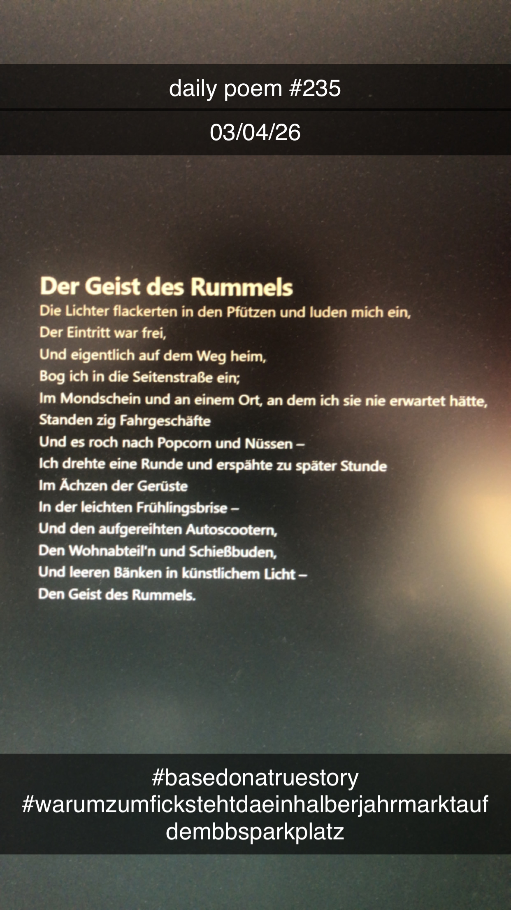

Der Geist des Rummels
[235]Die Lichter flackerten in den Pfützen und luden mich ein,
Der Eintritt war frei,
Und eigentlich auf dem Weg heim,
Bog ich in die Seitenstraße ein;
Im Mondschein und an einem Ort, an dem ich sie nie erwartet hätte,
Standen zig Fahrgeschäfte
Und es roch nach Popcorn und Nüssen –
Ich drehte eine Runde und erspähte zu später Stunde
Im Ächzen der Gerüste
In der leichten Frühlingsbrise –
Und den aufgereihten Autoscootern,
Den Wohnabteil'n und Schießbuden,
Und leeren Bänken in künstlichem Licht –
Den Geist des Rummels.
